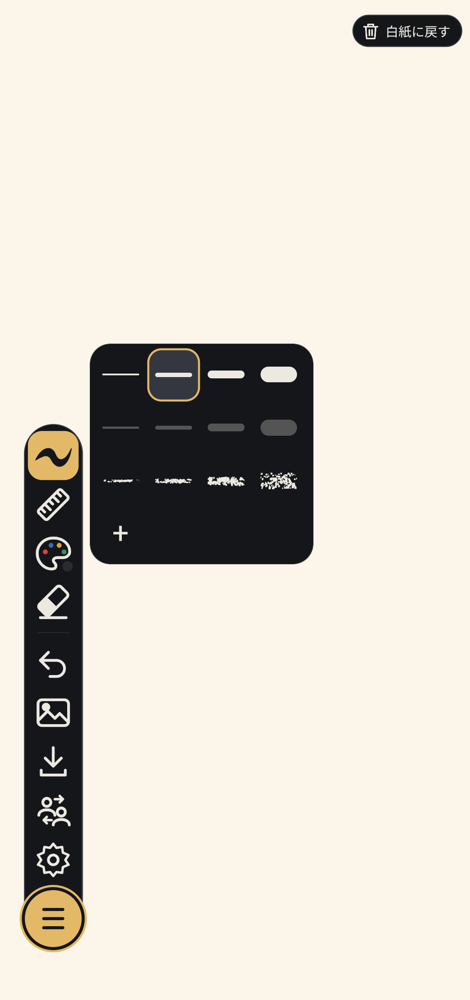
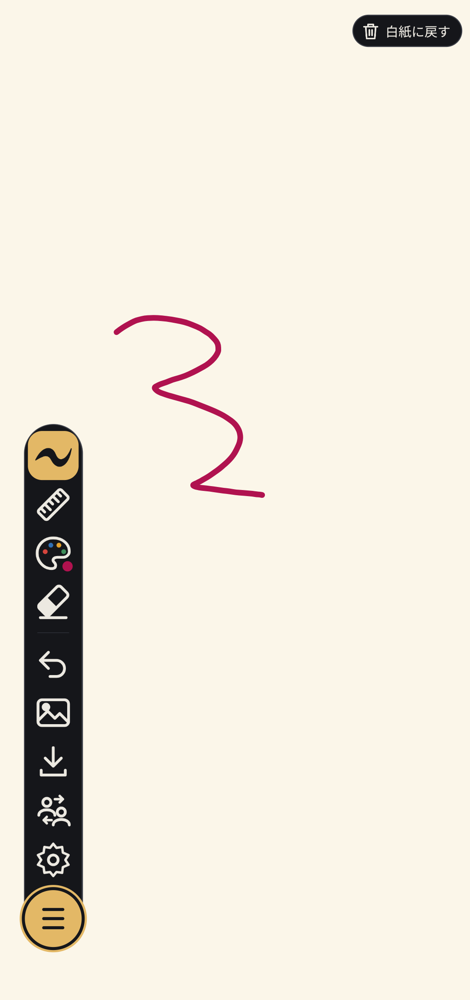
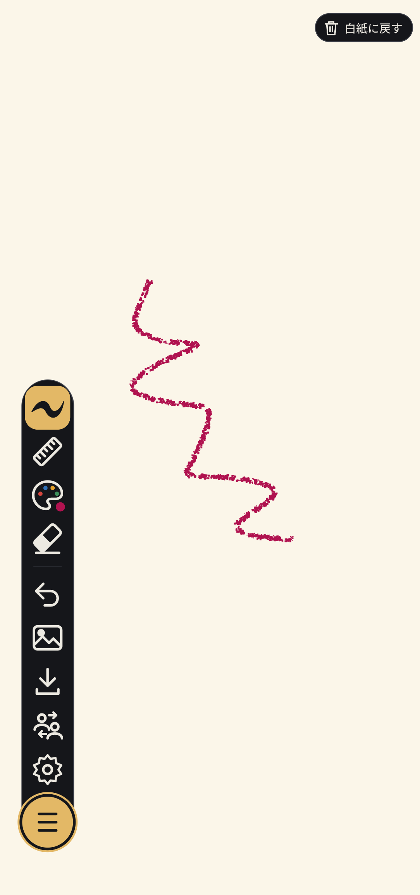
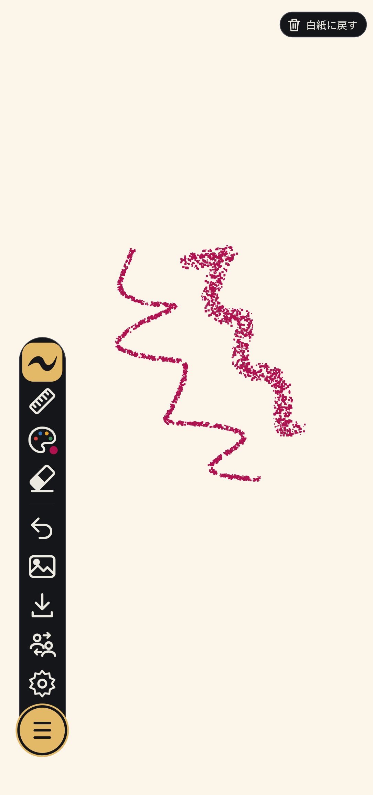
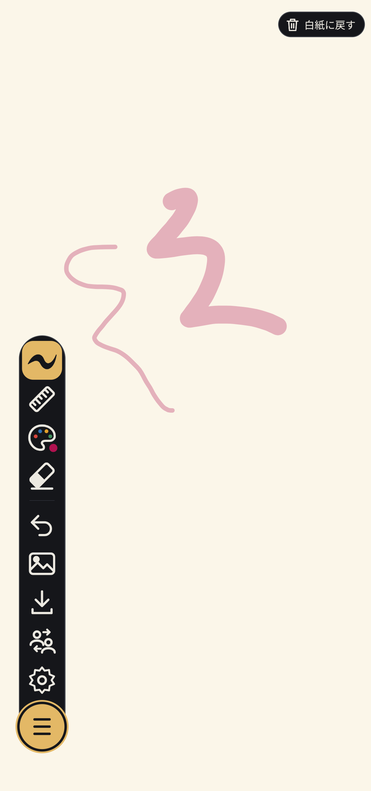
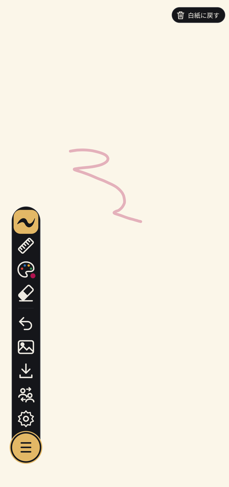
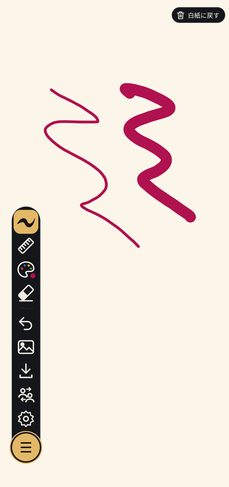
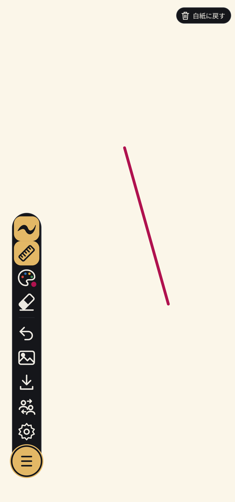
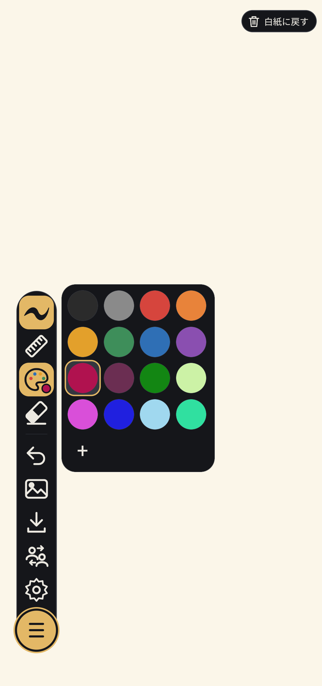

📖 はじめに（画面構成とツールバー）
「めものわ」を起動すると、目に優しいクリーム色の白紙ノートが全画面に広がります。画面左側（または配置に応じた位置）に並ぶ縦型のツールバーから、いつでも素早く道具を切り替えることができます。
ペン（太さ・スタイル）
タップして描画モードにします。もう一度タップすると太さやスタイル（通常・クレヨン・スプレー・マーカー）を選べます。
定規（直線モード）
オンにすると、指を引くだけで始点から終点まで歪みのないまっすぐな直線を引くことができます。
カラーパレット
ペンの色を選択します。16色の使いやすい標準色に加え、自由な色を追加できます。
消しゴム
描いたストロークを指やペン先でなぞって部分的に消去します。
元に戻す（アンドゥ）
直前に描いた1画（または消しゴム操作）を取り消して前の状態に戻します。
背景設定
キャンバスの背景を無地・方眼紙・端末内の好きな写真に切り替えます。
画像保存・印刷
作品を写真アルバムへ保存したり、A4比率での書き出し、透過PNG、プリンター印刷を行います。
共同編集
ネット不要！近くの端末と直接通信でつなぎ、同じノートをリアルタイムに共有します。
設定
テーマ（スキン）の変更、バックアップ・復元、言語切り替えなどを行います。
開閉トグル
タップするとツールバーがコンパクトに折りたたまれ、キャンバスを広く使えます。
✏️ ペンの太さとスタイルを選ぶ
ツールバーの一番上にある「ペン」アイコンをタップすると、ペンのカスタマイズメニューが開きます。


素直でなめらかな筆跡。普段の文字メモやお絵描きの主線に最適です。

画用紙に描いたようなあたたかいかすれ感。お子様のお絵描きにもぴったり。

細かな粒子が散るエアブラシ風の質感。背景や陰影のニュアンス付けに活躍します。

下が透けて見える半透明の線。文字の強調や色付け、塗り絵に便利です。

繊細なディテールや小さな文字の書き込みに。

力強い見出しや大胆なイラストの着色に。
📐 定規（直線ツール）でまっすぐな線を引く
手書きではブレてしまいがちな直線も、「定規」ツールを使えばワンアクションでピシッとまっすぐ引くことができます。
定規ツールの使い方
- ツールバー上から2番目の「定規」アイコンをタップして有効にします（アイコンが金色に光ります）。
- キャンバス上で指を置いて、引きたい方向へスライドします。
- 指を離すと、始点から終点まで一直線のきれいな線が確定します。

🎨 カラーパレットで色を選ぶ
ツールバーの「パレット」アイコンをタップすると、カラー選択パネルが表示されます。

パレット左下の「＋」ボタンをタップすると、スライダーや色相環から自分好みの色を無制限に作って追加できます。
🗑️ 白紙に戻す・やり直す
画面右上の「白紙に戻す」ボタンをタップすると、キャンバス上の描画内容を一括でクリアして最初のきれいな白紙に戻すことができます。
うっかり押し間違えて大切な絵が消えてしまわないよう、「白紙に戻す」ボタンを押した際には確認ダイアログが表示されます。